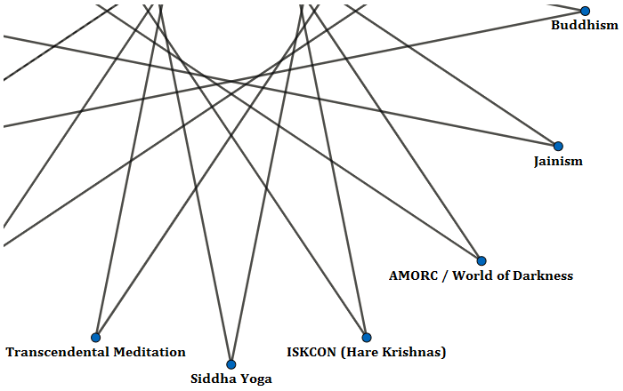

I’m doing significant digestive processing work on some neuroses (I believe that’s what they are) using caffeine, mostly coffee, but also I like to record my educational progress on the Internet.
I have a lot of nervousness regularly emerging from this work of mine, but I’m noticeably healthier than when I was using alcohol (what to speak of earlier years with less legal drugs), and I think the quality of information I’m recovering reflects the progress.
I’m presently in the beginning stages of convertantly developing my own realization and application of the Jainist religion (which seems to have much to do with animal spirits like the yakṣas and so forth).
I’m translating the Sanskrit words vaktavya and avaktavya, relevant to the Jainist theory of syādvāda (conditioned predication), as being advocation (of an existential describability) and protest (of an existentiality as being unqualified for descriptiveness).
Essentially, my treatment of these two principles pertains to the distinction between the (emphatically) visible world and the (emphatically) invisible world.
Our level of the known universe is first or basic, paralleling the human and the moon, while second level above us parallels gentility and the planet proper.
These ideas about two or more levels of Earth are found in the Biblical story of Adam and Eve, in the Vedic divisions of Devī-dhāma, Maheśa-dhāma, Hari-dhāma, plus Kṛṣṇaloka, and in numerous other cosmologies of Earth.
Lesser and greater kingdoms of life have varying levels of comprehension and cooperativity with the principles of anthropo-cosmology.
Plants are mildly digestive, but without the mouths that we have for chewing; animals express vocal sonorancy (vowelic sounds), but lack the development of complex obstruents (consonantal sounds) that give human language richer meaning; humans can begin to philosophize the value to life of logical affirmation, the opposing illogical nullifications being the delimitation to our species.
If we define gentility as a kingdom of life distinct from but within humanity, as humanity is distinct from but within animalia, we can say that it asserts its qualification in the advancement of those visions of life that encompass even true stupidity.
Via Negativa (apophatic theology) is evidence of the influence of gentle souls upon our society, and they have brought countless nullifications into the mix of language and life on Earth.
The gentle folk will certainly have to be the healers within said illogic and sophistry, but humanity is making progress in its replacement of nullification with the preferable affirmation.
Where sonorancy and obstruency are the affirmations and nullifications in the world of animalistic conflict, advocation and protest may be thought of as the gentle equivalent.
Affirmative advocation restores life within its normal social restraints to proper liberties such as make us healthy and strong again; protest is occultive against our sensible relativities, and thus sets us down into an environment more difficult than we can easily enjoy any more.
Of course, the defense of life and its precious sanities must be upheld, but by protest in this utility of the word I mean disagreement with the likes of divinity above us, and that is usually disadvantageous.

The six paths shown above, in my opinion, are saving humanity from aspects of conflict such as I’ve described thus far.
My own experiences with Siddha Yoga, the International Society for Krishna Consciousness (ISKCON), the Ancient and Mystical Order Rosae Crucis (AMORC), Mark Rein•Hagen’s World of Darkness, and now the beginnings of Mahāvīra’s Jainism, all confirm this thinking.
Siddha Yoga encourages a digestive yogic processing of the gross, subtle, causal, and supra-causal bodies; the Hare Krishnas strengthen devoutly sonorant praise of God; AMORC and World of Darkness in their respective ways (supportive and defensive) help a human live a life of affirmation; and now the advocation of respect for all types of souls is what I’m finding with Jainism.
Where all six of these, and some of their neighbors in the elaboration of this context (including Christian Apologetics and Research Ministry left of Transcendental Meditation, Zoroastrianism oppositely above World of Darkness, Christian Science as the human zenith opposite Siddha Yoga, etc.), are protective of first level (human & lunar) justice, the variances between them can also represent some vertical differences.
Ascension from basest existence can include the develpment of strengths we had not yet possessed while protecting those we did begin with.
So these faiths (which I loosely associate with what I call Articulate Christianity) can be compared as parallels with varying strengths according to emphases on the human or the universe, and on logic or sophistication, but in an ascension process that begins with one part of the spectrum, the gradual development of neighboring strengths may give a picture of a path upward and around (much like a spiral staircase).
Usually in a two-dimensional diagram, x-axis is horizontal and y-axis vertical, but in this representation it’s the opposite.
My own way of trying to work with Siddha Yoga has been the protection of x-axis universalism in my own life, while x-axis humanism for me is the pursuit of Christian Science’s ideals.
My perpendicular y-axis journey is a pathway of progress from the relatively sophisticate beginnings of my life, step-by-step toward a greater inclusion of simpler logistics, which is where I see Buddhism inward even of the soul of this type of logic.
Robert Pirsig’s Metaphysics of Quality (MoQ) distinguishes dynamism from stasis, and I find his paradigm to be very compatible both with my own thinking and with the Vedantic description of sheaths (kośa) around the soul (ātman).
Anna-maya kośa correlates well with MoQ’s inorganic stasis, prāṇa-maya with biological stasis, mano-maya with social stasis, and vijñāna-maya with intellect.
These four divisions of static qualification seem to me to be a proper outline for first level life, where dynamism should be what second level life above us is, the typically fifth Vedantic sheath being second level’s first basic subdivision, ānanda-maya, which is bliss.
My further judgment in comparing paradigms tells me that of these sheaths, anna and prāṇa have a lot to do with plants and animals, though Pirsig uses the terms inorganic and biological to distinguish the two subdivisions beneath society.
Manas and vijñāna would correspond to humanity, which is truly social, and gentility (elven-kind), which is the intellectual life.
There is another “kingdom of life” above these, which we might call the wise (the Istari in Lord of the Rings anthropo-cosmology), and ānanda-maya seems to be its qualifier.
What I’ve learned of the paths diagrammed above is that they work with spiritual identities (gods, angels, and other metaphysical beings) at different levels.
Some are stronger in their views of simple godliness, others have greater respect for heavenly relativities.
If I achieved any correct wisdom in my own practice of Siddha Yoga, it is that God or Self has establishment at the level of ānanda while liberating its yogic practitioner from vijñāna; ISKCON’s style of worship is more affirmatively intellectual and so possibly vijñānic, even though it asserts a sophistication of bhakti or devotion as it saves its devotee from manasic social rules.
The manasic or social self is strong in its way of speaking for itself if the lifestyle choice is Rosicrucian (AMORC) or Live-Action Role-Playing (World of Darkness), where the progressive salvation is more prāṇic, meaning level with animal spirituality.
Once a pursuant of simple logic reaches that inwardness where World of Darkness meets Jainism, they have gained the respect of (and for) what animal spirits truly are (Eastern culture lists: piśācas, bhūtas, yakṣas, rākṣasas, kiṃnaras, kiṃpuruṣas, mahoragas, and gandharvas).
Salvation then becomes a confrontation of hunger, which is an urging from the level of anna-maya.
Looking ahead to Buddhism (twenty or so years from now if I continue this vision), I see that its faith has a noteworthy quality of compassion for what it calls “hungry ghosts” (pretas).
Jainism gives a great deal to the consideration of life at a very humble level, but the logistically superlative humility of Buddhism allows one liberation from the very soul itself.
These details of design that I’m observing from a somewhat transient way of experimenting with religious theory and practice make enough sense to me, but obviously those who are more committal in their devotions to pathway singularity will know their respective truths better than many of the rest of us do.